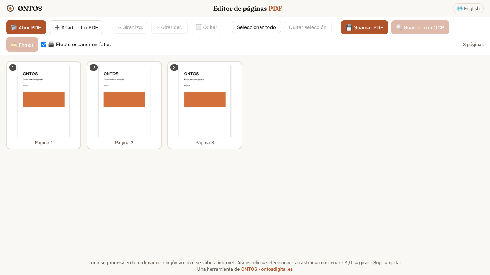

01 · Herramientas webConsultoría · Aplicaciones a medida
Fusión de CamScanner e iLovePDF
Aplicaciones a medida para trabajar con documentos, ordenar información y automatizar tareas repetitivas.
Ya construido: editor PDF. Une, gira y reordena páginas; convierte fotos de folios en documentos. Los archivos se procesan en tu navegador.
Probar el editor PDF ▸